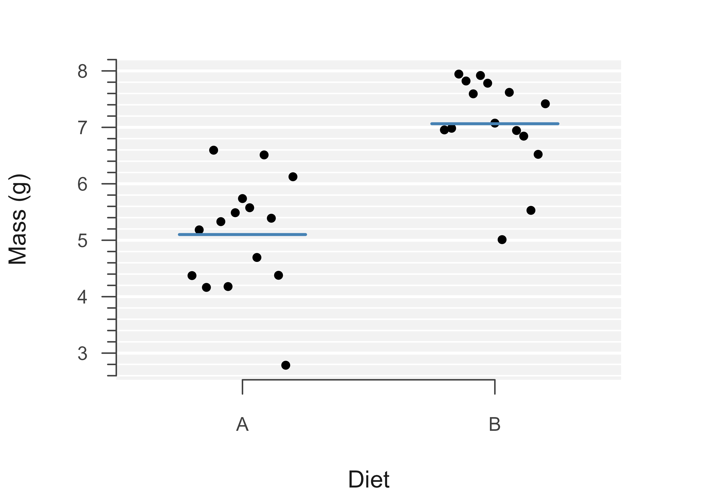
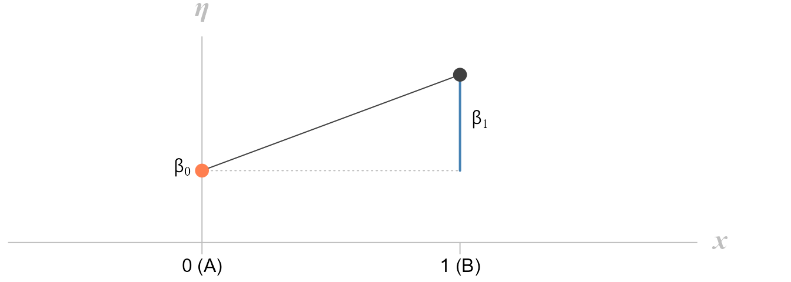
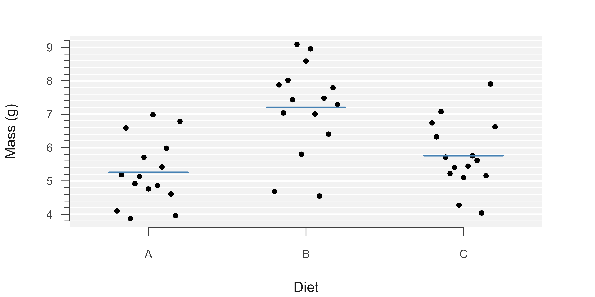
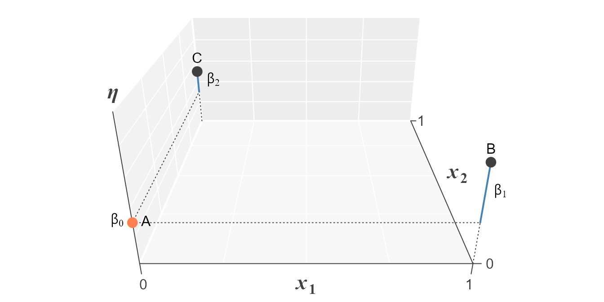

(Mass of 30 fish on two diets.)
Linear regression with categorical explanatory variables.
This chapter uses GLM notation for formulas (\(\eta\)), but to focus on the concept of dummy variables, only normal examples are shown (lm). For Poisson and binomial examples, try the explore mode of the interactive app at the bottom.

Mathematical formula:
\[\begin{align} \eta &= \beta_0 + \beta_1 \cdot x \\ \tag{1}\label{dummy2}\\ x &=\begin{cases}1 \quad \text{if B}\\ 0 \quad \text{otherwise} \end{cases} \end{align}\]
Code:
model <- lm(y ~ group, data)import statsmodels.formula.api as smf
model = smf.ols("y ~ group", data).fit()The linear combination of the explanatory variables and their coefficients.
For ordinary linear models, this is just the predicted value of the outcome (\(y\)).
A dummy variable can only take on one of two values, \(0\) or \(1\). It works like a switch: In group B, it is on (\(x = 1\)) and adds \(\beta_1\) to \(\eta\). For all other groups (in this case only A), it is off (\(x = 0\)).
Value of the linear predictor (\(\eta\)), when \(x\) is zero.
Here, \(x\) is zero in group A (the reference group), so this is simply \(\eta\) in group A.
Linear models work with numbers, but a categorical variable consists of labels (e.g., group A and group B). A dummy variable translates those labels into a \(0\) or a \(1\), so that they can be used in the formula. You do not have to create it yourself: R and Python do this automatically for a categorical variable. The coefficient \(\beta_1\) in this case is the difference between the groups:

There is not really a line anymore: Since \(x\) has only two possible values, the model simply estimates one mean per group. The two groups are then defined as follows:
| Group | \(x\) | \(\eta\) |
|---|---|---|
| A | \(0\) | \(\beta_0\) |
| B | \(1\) | \(\beta_0 + \beta_1\) |
The group in which the dummy variable is zero is called the reference group. By default, this is the first group in alphabetical order. With two groups, choosing the other group as the reference does not change the model: The intercept becomes the mean of group B, and the slope keeps its size, but changes sign.
Fitted to the data of Figure 3.1, the model gives the following estimates:
model <- lm(y ~ group, data)
summary(model)$coefficients Estimate Std. Error t value Pr(>|t|)
(Intercept) 5.100843 0.2427807 21.010082 1.109760e-18
groupB 1.963231 0.3433438 5.717974 3.919254e-06import statsmodels.formula.api as smf
model = smf.ols("y ~ group", data).fit()
print(model.summary().tables[1])==============================================================================
coef std err t P>|t| [0.025 0.975]
------------------------------------------------------------------------------
Intercept 5.1008 0.243 21.010 0.000 4.604 5.598
group[T.B] 1.9632 0.343 5.718 0.000 1.260 2.667
==============================================================================Note that Python names the row group[T.B], instead of groupB.
The estimated mean of the reference group (A) is given by (Intercept) (5.1). For group B, we have to add groupB and the mean becomes 7.06. Apparently, this difference is significant (\(p = 3.92 \times 10^{-6}\)).
The \(p\)-value of the slope in the regression table tests whether the difference between the groups is zero. This is the same test as a two-sample \(t\)-test with equal variances: Both give the same \(t\)-value and the same \(p\)-value:
t.test(y ~ group, data, var.equal = TRUE)
Two Sample t-test
data: y by group
t = -5.718, df = 28, p-value = 3.919e-06
alternative hypothesis: true difference in means between group A and group B is not equal to 0
95 percent confidence interval:
-2.666539 -1.259923
sample estimates:
mean in group A mean in group B
5.100843 7.064073 from scipy import stats
a = data.loc[data["group"] == "A", "y"]
b = data.loc[data["group"] == "B", "y"]
tt = stats.ttest_ind(a, b, equal_var=True)
tt.statistic, tt.pvalue(np.float64(-5.717973531619031), np.float64(3.919253756673757e-06))The advantage of using a model is flexibility: We can assume different distributions with a GLM, adjust for the effect of other variables as shown in the next chapter, and perform diagnostics as we would for any other model.
For a complete analysis, refer to the tutorials at the bottom of the page.

Mathematical formula:
\[\begin{align} \eta &= \beta_0 + \beta_1 \cdot x_1 + \beta_2 \cdot x_2 \\ \tag{2}\label{dummyk}\\ x_1 &= \begin{cases}1 \quad \text{if B}\\ 0 \quad \text{otherwise} \end{cases}\\ x_2 &= \begin{cases}1 \quad \text{if C}\\ 0 \quad \text{otherwise} \end{cases} \end{align}\]
Code:
model <- lm(y ~ group, data)import statsmodels.formula.api as smf
model = smf.ols("y ~ group", data).fit()The linear combination of the explanatory variables and their coefficients.
For ordinary linear models, this is just the predicted value of the outcome (\(y\)).
Translate the groups into numbers that can be used in the formula, one for each group except the reference group (A). Each works like a switch: \(x_1\) is on in group B and adds \(\beta_1\) to \(\eta\); \(x_2\) is on in group C and adds \(\beta_2\); in group A, both are off.
Value of the linear predictor (\(\eta\)), when \(x_1\) and \(x_2\) are zero.
Here, both are zero in group A (the reference group), so this is \(\eta\) in group A.
Change in the linear predictor (\(\eta\)), when \(x_1\) increases by one.
Here, \(x_1\) can only increase from \(0\) (group A) to \(1\) (group B), so this is the difference in \(\eta\) between group B and group A.
With more than two groups, a single dummy variable is no longer enough. Every group except the reference group gets its own dummy variable, and with it, its own difference from the reference group:

The means of the three groups are then defined as follows:
| Group | \(x_1\) | \(x_2\) | \(\eta\) |
|---|---|---|---|
| A | \(0\) | \(0\) | \(\beta_0\) |
| B | \(1\) | \(0\) | \(\beta_0 + \beta_1\) |
| C | \(0\) | \(1\) | \(\beta_0 + \beta_2\) |
Fitted to the data of Figure 3.3, the model gives the following estimates:
model <- lm(y ~ group, data)
summary(model)$coefficients Estimate Std. Error t value Pr(>|t|)
(Intercept) 5.2573856 0.2948527 17.830551 3.319493e-21
groupB 1.9425723 0.4169846 4.658618 3.199244e-05
groupC 0.5016196 0.4169846 1.202969 2.357259e-01import statsmodels.formula.api as smf
model = smf.ols("y ~ group", data).fit()
print(model.summary().tables[1])==============================================================================
coef std err t P>|t| [0.025 0.975]
------------------------------------------------------------------------------
Intercept 5.2574 0.295 17.831 0.000 4.662 5.852
group[T.B] 1.9426 0.417 4.659 0.000 1.101 2.784
group[T.C] 0.5016 0.417 1.203 0.236 -0.340 1.343
==============================================================================Note that Python names the rows group[T.B] and group[T.C], instead of groupB and groupC.
The estimated mean of the reference group (A) is given by (Intercept) (5.26). For group B, we have to add groupB and the mean becomes 7.2. For group C, we have to add groupC and the mean becomes 5.76.
Careful, the \(p\)-values of groupB and groupC only tell you whether these groups differ from the reference group. They do not tell you whether B differs from C, nor whether there are any differences between the groups at all.
By default, the reference group is the first group in alphabetical order. With more than two groups, the choice matters: It determines which differences the regression table shows. The model itself does not change, so neither do the estimated means, nor the omnibus test.
data$group <- relevel(factor(data$group), ref = "C")
model <- lm(y ~ group, data)model = smf.ols("y ~ C(group, Treatment(reference='C'))", data).fit()First, to test the overall effect of group, we can use an omnibus test:
library("car")
Anova(model)Anova Table (Type II tests)
Response: y
Sum Sq Df F value Pr(>F)
group 30.508 2 11.697 9.16e-05 ***
Residuals 54.771 42
---
Signif. codes: 0 '***' 0.001 '**' 0.01 '*' 0.05 '.' 0.1 ' ' 1import statsmodels.api as sm
print(sm.stats.anova_lm(model, typ=2)) sum_sq df F PR(>F)
group 30.507772 2.0 11.697125 0.000092
Residual 54.771000 42.0 NaN NaNNote that anova_lm only works for ordinary linear models. For a GLM, use .wald_test_terms(scalar=True) on the fitted model.
Apparently, there are significant differences between the groups (\(p = 9.16 \times 10^{-5}\)). To determine which groups differ, we can perform pairwise comparisons:
library("emmeans")
EMM <- emmeans(model, pairwise ~ group)
EMM$contrasts contrast estimate SE df t.ratio p.value
A - B -1.943 0.417 42 -4.659 <0.0001
A - C -0.502 0.417 42 -1.203 0.4581
B - C 1.441 0.417 42 3.456 0.0036
P value adjustment: tukey method for comparing a family of 3 estimates After multiple testing correction, fish on diet B are on average 1.94 g heavier than on diet A (\(p = 9.34 \times 10^{-5}\)), and 1.44 g heavier than on diet C (\(p = 3.56 \times 10^{-3}\)). Diets A and C do not differ significantly (\(p = 0.458\)).
R’s emmeans package already applies multiple testing correction, meaning these three tests have an overall chance of at least one false positive no larger than \(\alpha\).
from statsmodels.stats.multicomp import pairwise_tukeyhsd
tk = pairwise_tukeyhsd(data["y"], data["group"], alpha=0.05)
print(tk.summary())Multiple Comparison of Means - Tukey HSD, FWER=0.05
====================================================
group1 group2 meandiff p-adj lower upper reject
----------------------------------------------------
A B 1.9426 0.0001 0.9295 2.9556 True
A C 0.5016 0.4581 -0.5114 1.5147 False
B C -1.441 0.0036 -2.454 -0.4279 True
----------------------------------------------------Note: The comparison above works for ordinary linear models only. For GLMs, pairwise_tukeyhsd does not apply.
To reproduce R’s emmeans, the same contrasts can be computed from a model fitted with y ~ 0 + C(group). Then, take pairwise differences of the coefficients, use standard errors from the covariance matrix, and adjust the test statistics with the studentized range distribution.
An example implementation using this approach is provided in the Python tutorial at the bottom of the page.
For a complete analysis, refer to the tutorials at the bottom of the page.
A colleague compares the height of 45 trees between three sites. In the data, the sites are coded as 1, 2 and 3. This is the resulting regression table:
Estimate Std. Error t value Pr(>|t|)
(Intercept) 13.5266712 0.7668764 17.6386589 2.643897e-21
site 0.1358843 0.3549948 0.3827782 7.037699e-01site is not significant (\(p = 0.704\)), so the colleague concludes tree height does not differ significantly between sites. What went wrong? (choose one)
A. Site 1 is missing from the table, so its trees were left out of the analysis
B. site was treated as a continuous variable, so the model assumes that the mean height changes by the same amount from site 1 to site 2 as from site 2 to site 3
C. Three sites need three dummy variables, but the model has only one
D. 15 trees per site are too few to detect a difference in height
Count the rows of the table. How many dummy variables do three groups need?
A colleague compares the height of 45 trees between three sites. In the data, the sites are coded as 1, 2 and 3. This is the resulting regression table:
Estimate Std. Error t value Pr(>|t|)
(Intercept) 13.5266712 0.7668764 17.6386589 2.643897e-21
site 0.1358843 0.3549948 0.3827782 7.037699e-01site is not significant (\(p = 0.704\)), so the colleague concludes tree height does not differ significantly between sites. What went wrong? (choose one)
A. Site 1 is missing from the table, so its trees were left out of the analysis
B. site was treated as a continuous variable, so the model assumes that the mean height changes by the same amount from site 1 to site 2 as from site 2 to site 3
C. Three sites need three dummy variables, but the model has only one
D. 15 trees per site are too few to detect a difference in height
A. All 45 trees are in the model. Site 1 has no row because there are no dummy variables at all: site is a slope, and the intercept is the mean height at a ‘site 0’ that does not exist.
B. Because the sites are coded as numbers, the model treats site as a continuous variable: Every step from one site to the next changes the mean height by the same amount (0.14 m). The site numbers are only labels, so this makes no sense. The mean heights at the three sites are 12.7, 15.8, 12.9 m: up and back down, which a single slope cannot describe.
C. Three groups need two dummy variables, not three: The first group is the reference group, in the intercept. With dummy variables, the table would have two rows, site2 and site3.
D. There are enough trees. With site as a categorical variable, the same 45 trees show that site 2 differs from site 1 (\(p = 6.60 \times 10^{-8}\)).
To fix this, tell R or Python that site is categorical: factor(site) in R, or C(site) in Python.
Below is the regression table of the Example under Any number of groups: the mass of fish on three diets.
Estimate Std. Error t value Pr(>|t|)
(Intercept) 5.2573856 0.2948527 17.830551 3.319493e-21
groupB 1.9425723 0.4169846 4.658618 3.199244e-05
groupC 0.5016196 0.4169846 1.202969 2.357259e-01Which of the following does this table show? (true or false for each)
1. Diet B differs significantly from diet A
2. Diets B and C differ significantly
3. Diets A and C do not differ
4. The table tests whether diet has an overall effect on mass
Each row compares one group with the reference group. See also the note below the table in the Example.
Below is the regression table of the Example under Any number of groups: the mass of fish on three diets.
Estimate Std. Error t value Pr(>|t|)
(Intercept) 5.2573856 0.2948527 17.830551 3.319493e-21
groupB 1.9425723 0.4169846 4.658618 3.199244e-05
groupC 0.5016196 0.4169846 1.202969 2.357259e-01Which of the following does this table show? (true or false for each)
1. Diet B differs significantly from diet A — True
2. Diets B and C differ significantly — False
3. Diets A and C do not differ — False
4. The table tests whether diet has an overall effect on mass — False
1. The row groupB is the difference between diet B and the reference group (A), and its \(p\)-value is below \(0.05\).
2. No row compares B with C: Both rows are differences from the reference group (A). That groupB is significant and groupC is not does not mean that B and C differ significantly. This takes pairwise comparisons, or another reference group. The pairwise comparisons in the Example do find a difference, but this table cannot show it.
3. The row groupC is not significant, but absence of evidence is not proof of absence (see the common misconceptions about \(p\)-values).
4. The table tests each group against the reference group, not all groups at once. That takes an omnibus test, as shown in the Example.
Practice the concepts covered in this chapter:
This app runs in your browser. The first time, your browser downloads about 50 MB, which can take a minute or more.
Now analyze a dataset yourself. Start with the worked examples, then do the exercise:
read.csv("name-of-data.csv").Under construction. Check back later.